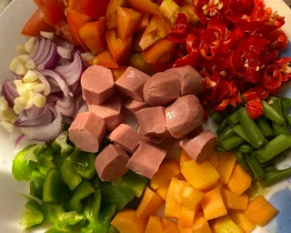
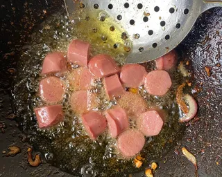
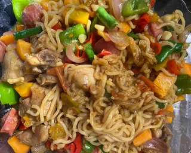
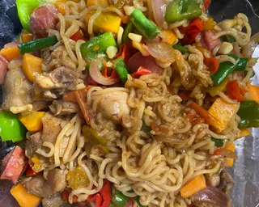

How to make a delicious "Nepo-Noodles"

Nepo-Noodles is a quick, flavorful dish made with noodles, fried eggs , and added ingredients like carrots, green beans, hotdogs, and sardines.
Noodles are cooked with seasoning, while the egg is fried, and the vegetables and proteins are mixed in for extra taste and nutrition.
It’s a simple, filling meal that’s perfect for students or busy days.
Recipe information
- Preparation time: 30 minutes
- Cooking time: 20 minutes
- Number of servings: 2
- Difficulty level: Beginner
Ingredients
- 4 noodle packets
- 2 medium green bell peppers
- 4 scotch bonnets (as much heat as you want)
- 4 medium carrots
- 3 chicken sausages
- 2 chicken breasts/thighs
- 5–6 green beans
- 1 large onion
- 4 medium tomatoes
- 2 medium cloves of garlic (optional)
- 2 tablespoons ginger powder
- 50 ml groundnut oil
For the chicken
- 1 tablespoon salt
- 2 tablespoons turmeric
- 2 bouillon cubes
- 2 tablespoons curry
- 2 tablespoons thyme
- 1 small onion (optional)
Nutrition Facts (per serving)
Calories: 576.25 kcal
Carbohydrates: 51g
Fat: 28.5g
Protein: 26g
Fiber: 10g
Cooking instructions (step by step)
-
Boil your noodles in hot water for 4–6 minutes at 100°C, or until slightly more than halfway cooked, then drain.
-
While your noodles are boiling, chop your veggies and protein; set them aside.
 -
Add about half a cup of water, salt, bouillon cube, curry, thyme, turmeric, ginger powder, and diced onions to a pan. Let it simmer 5–7 minutes.

-
Remove chicken when fully boiled. Add vegetable oil, return the chicken, and fry until golden brown.

-
Remove chicken; add diced chicken sausages and fry about 2 minutes.
 -
Remove sausages; add onions and garlic to the pan.
-
Add chopped scotch bonnet peppers and tomatoes; fry for a minute.
-
Add greens, the noodle seasoning packet, turmeric powder, and ginger powder.

-
Allow everything to fry for about a minute or two while you stir.
-
Add your carrots and let them fry for another minute.

-
Add your parboiled noodles to the mixture, then add your proteins. Stir and let it cook for about 2 minutes.


-
Stir for another minute, then plate your meal and enjoy!
 

For more information about this recipe, Visit here.